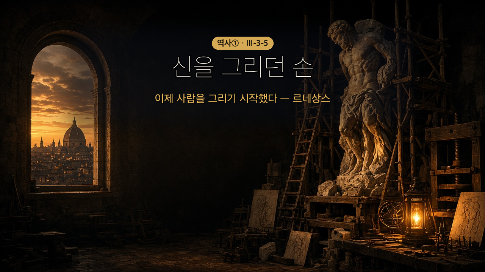

왜 하필 이탈리아에서, 왜 하필 그때였을까?
르네상스 — 프랑스어로 '재생'·'부활'. 14~16세기 유럽에서 고대 그리스·로마 문화를 되살려 인간 중심의 새 문화를 만들려 한 움직임.
왜 하필 이탈리아였나 — 세 가지가 한곳에 모였다.
| 유산 | 사람 | 돈 |
|---|---|---|
| 고대 로마의 중심지 | 비잔티움 제국 학자들의 이주 | 지중해 무역으로 부유해진 상인의 후원 |
인문주의 — 그리스·로마 문화를 본받아 인간의 개성과 능력을 중요하게 여긴 흐름. 신이 중심이던 중세 세계관에서 벗어나 인간의 삶에 관심을 가졌다.
| 분야 | 대표 |
|---|---|
| 문학 | 보카치오 『데카메론』 |
| 미술 | 레오나르도 다 빈치 · 미켈란젤로 · 라파엘로 — 인체의 아름다움 |
| 건축 | 대칭과 비례 중시 → 성 베드로 대성당 |
남과 북, 결이 다르다
| 이탈리아 | 알프스 이북(16세기~) | |
|---|---|---|
| 한마디로 | "인간은 아름답다" | "우리 사회 이거 이상하지 않아?" |
| 성격 | 예술·인간 탐구 | 현실 사회와 교회 비판 |
| 대표 | 다 빈치·미켈란젤로·라파엘로 | 에라스뮈스 『우신예찬』 · 토머스 모어 『유토피아』 · 세르반테스 『돈키호테』 |

- 르네상스가 일어난 배경을 파악할 수 있다.
- 이탈리아와 알프스 이북의 르네상스 특징을 비교할 수 있다.
| 낱말 | 쉽게 말하면 | 한자·어원 뜯어보기 | 문장 속에서 |
| 르네상스 | 다시 태어남 | (프랑스어 '재생·부활') | "고대 문화를 되살리려는 르네상스가 일어났다." |
| 인문주의 | 사람을 중심에 두는 생각 | 인(人, 사람) + 문(文, 글·문화) | "인문주의자들은 인간의 삶에 관심을 가졌다." |
| 후원 | 돈이나 힘으로 뒤에서 도와줌 | 후(後, 뒤) + 원(援, 도울) | "상인들이 예술가를 후원했다." |
| 풍자 | 웃음으로 비틀어 비판함 | 풍(諷, 빗대다) + 자(刺, 찌를) | "『우신예찬』은 성직자를 풍자했다." |
💡 오늘의 핵심어 딱 하나 — 인문주의(신 중심 → 사람 중심).
14~16세기 유럽에서 고대 그리스·로마 문화를 되살려 인간 중심의 새 문화를 만들려는 움직임, 곧 ①가 일어났다.
(교과서 원문: "14~16세기 유럽에서는 고대 그리스·로마의 문화를 되살려 인간 중심의 새로운 문화를 만들려는 움직임인 르네상스가 일어났다." — 비상교육 역사①(이병인) p.102)
이탈리아에서 시작된 이유 세 가지
| 조건 | 내용 |
| 유산 | 고대 로마의 중심지라 로마 문화유산이 많이 남아 있었다 |
| 사람 | 비잔티움 제국 학자들이 많이 이주해 고전 연구가 활발했다 |
| 돈 | 지중해 무역으로 부유해진 상인들이 예술가를 후원했다 |
🎙️ 세 번째가 핵심이야. 지난 시간 십자군 이후 돈을 번 그 상인들 — 이들이 화가·조각가를 먹여 살린 거지. 요즘으로 치면 대기업이 아이돌 소속사를 후원하는 셈이랄까.
르네상스 시기에는 그리스·로마 문화를 본받아 인간의 개성과 능력을 중요하게 여기는 ②가 발달했다. 이들은 신이 중심이던 중세의 세계관에서 벗어나 인간의 삶에 관심을 가졌다.
(교과서 원문: "인문주의자들은 신이 중심이 되는 중세의 세계관에서 벗어나 인간의 삶에 관심을 가졌다." — 같은 책 p.102)
문학에서는 보카치오가 인간의 욕망을 사실적으로 그린 『③』을 남겼다.
- 미술 — 레오나르도 다 빈치, 미켈란젤로, 라파엘로가 인체의 아름다움을 생생하게 표현
- 건축 — 대칭과 비례를 중시하는 르네상스 양식 → 대표작 성 베드로 대성당
🖼 교과서의 「미의 세 여신」 세 작품을 비교해 보자. 고대(생생한 몸) → 중세(밋밋하고 딱딱함) → 르네상스(다시 살아난 몸). 그림만 봐도 시대가 보인다.
16세기 이후 르네상스는 알프스 이북으로 퍼졌다. 이북의 르네상스는 현실 사회와 교회의 문제점을 비판하는 경향이 강했다.
네덜란드의 인문주의자 에라스뮈스는 『④』에서 교황과 성직자의 부패를 풍자했다.
(사료: "요즘 교황은 힘들고 어려운 일은 베드로와 바울에게 떠넘기고 호화로운 의식과 즐거운 일만 찾는다. …… 교황은 화려한 옷을 입고 교회 의식을 주관하고, 축복이나 저주의 말을 하는 감독자 역할만 하면 충분히 그리스도에게 충성했다고 생각한다." — 에라스뮈스, 『우신예찬』·교과서 p.103)
비판의 칼끝은 교회에만 향한 게 아니었다. 영국의 토머스 모어는 『⑤』에서 자기 나라 영국 사회를 비판했고, 에스파냐의 세르반테스는 『돈키호테』에서 몰락해 가는 중세 기사를 풍자했다. 미술에서도 성인이나 귀족이 아니라 보통 사람들의 일상생활을 그린 작품이 많이 나왔다.
(교과서 원문: "이 밖에도 토머스 모어는 『유토피아』에서 영국 사회를 비판하였고, 세르반테스는 『돈키호테』에서 몰락하는 중세 기사를 풍자하였다. 미술 분야에서는 사람들의 일상생활을 표현한 작품이 많이 나왔다." — 같은 책 p.103)
🎙️ 『돈키호테』 알지? 낡은 갑옷 입고 풍차한테 돌진하는 그 아저씨. 웃기려고 만든 이야기 같지만, 사실 "기사도라는 게 이미 한물갔다"는 선언이야. 3-3-4에서 화약 때문에 기사가 몰락했다고 배웠잖아. 그 몰락한 계급을 문학이 웃음거리로 만드는 데까지 온 거지.
남쪽(이탈리아)은 "인간은 아름답다"였는데, 북쪽은 "우리 사회 이거 이상하지 않아?"였어. 같은 르네상스인데 결이 달라.
르네상스 시기에는 인간과 자연에 대한 관심이 커지면서 과학과 기술도 함께 발달했다.
코페르니쿠스와 갈릴레이가 주장한 ⑥은 지구가 우주의 중심이라 믿던 중세 교회의 천동설을 흔들며, 당시 사람들의 우주관에 큰 변화를 가져왔다.
그리고 구텐베르크가 발명한 활판 인쇄술은 새로운 지식과 사상이 널리 퍼지는 데 크게 기여했다.
(교과서 원문: "르네상스 시기에는 인간과 자연에 대한 관심이 커지면서 과학과 기술이 발달하였다. 코페르니쿠스와 갈릴레이가 주장한 지동설은 중세 교회의 천동설을 믿었던 당시 사람들의 우주관에 큰 변화를 가져왔다. 구텐베르크가 발명한 활판 인쇄술은 새로운 지식과 사상이 보급되는 데 크게 기여하였다." — 같은 책 p.103)
🎙️ 이게 왜 그렇게 큰일이었을까? 천동설은 "지구가 한가운데 있고 해가 우리 주위를 돈다"는 생각이야. 그냥 천문학 이야기 같지? 아니야 — "세상의 중심은 우리"라는 믿음이 걸려 있었어. 지동설은 그 자리를 빼앗은 거야. 인문주의가 "신이 아니라 사람을 보자"고 했다면, 지동설은 "그 사람이 사는 곳도 우주의 중심은 아니다"라고 한 셈이지.
그리고 인쇄술 — 이게 없었으면 위의 모든 이야기가 몇몇 학자들 사이에서 끝났을 거야. 손으로 베끼던 책을 기계로 찍어 내니까, 생각이 사람보다 빨리 움직이기 시작했어.
십자군 이후 동방 교류·상업 부활 ↓ 이탈리아 상인의 부 → 예술가 ⑦ ↓ 로마 유산 + 비잔티움 학자 ↓ 르네상스 (인간 중심) → 알프스 이북 (교회 비판) ↓ 인쇄술로 확산
| 구분 | 이탈리아 르네상스 | 알프스 이북 르네상스 |
| 중심 내용 | ||
| 대표 인물 |
| 번호 | 문장 | O/X |
| 1 | 르네상스가 이탈리아에서 시작된 배경에는 로마 문화유산과 상인들의 후원이 있었다. | |
| 2 | 인문주의는 신을 세계의 중심에 두는 중세 세계관을 더욱 강화하려는 흐름이었다. | |
| 3 | 알프스 이북의 르네상스는 현실과 교회를 비판하는 경향이 강하였다. |
에라스뮈스는 교회를 정면으로 공격하지 않고 웃음(풍자)으로 비판했어.
왜 굳이 웃음이라는 방법을 썼을까? 그리고 그런 방식은 효과가 있었을까? 두세 문장으로 네 생각을 써 보자.